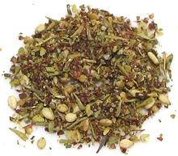

 |
Za'atar - Herb MixLevant - Za'atar | ||||
| Makes: Effort: Sched: DoAhead: |
4 oz ** 12 min Yes |
The seasoning mix Za'atar is extremely important in the Levant. Unfortunately, a truly authentic version is near impossible to make in North America - see Za'atar. | |||
|
|
1/4 1 1 3 1/4 2 1/2 |
c T T T t T t |
Thyme, dried Oregano, dried Marjoram, dried Sumac (1) Cumin Sesame Seeds Salt |
Make - (7 min)
|